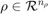
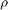

State Consistency
LPV systems are time-varying, state-space models of the form:
where  is a vector of measurable parameters, is a vector of outputs, is the state vector, is a vector of inputs, and , , and are parameter dependent matrices.
Note that the state-vector of the system in Equation (1) remains the same for all values of the parameter, i.e. the states in are ordered the same way, and their interpretation remains the same, irrespective of the value of . This property is referred to as state consistency, and it must be kept in mind when working with LPV models.
State Consistency in LPV Model Construction
A common approach to constructing LPV models is to use Jacobian linearization along a grid of parameter values (e.g. batch linearization of Simulink models) to construct a grid-based LPV system. In this case, the user must ensure that the models generated by the linearization all share the same state-vector.
Figure 1 illustrates the concept. A nonlinear model is linearized along a grid of Mach and altitude values, resulting in an array of linearized systems. State consistency requires the state vectors () of all the individual linearizations to be identical if these models are to be used to contruct a grid-based LPV system.

Figure 1: A grid-based LPV system.
Maintaining State Consistency
There are some operations that are commonly applied to Linear Time-Invariant (LTI) systems, that can result in loss of state-consistency of a LPV model. A good example is balreal, which performs a Gramian-based balancing of a LTI state-space realization. If balreal is applied to a grid-based LPV system it will balance each of the LTI models, which the grid-based LPV system is comprised of, and the resulting systems will no longer have state consistency. An alternative function that will maintain state consistency is lpvbalreal which computes a balancing realization for the LPV system as a whole, yielding a balanced LPV system with state consistency.